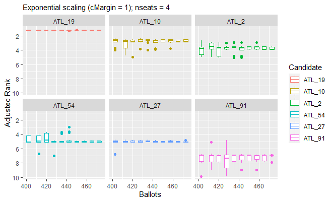
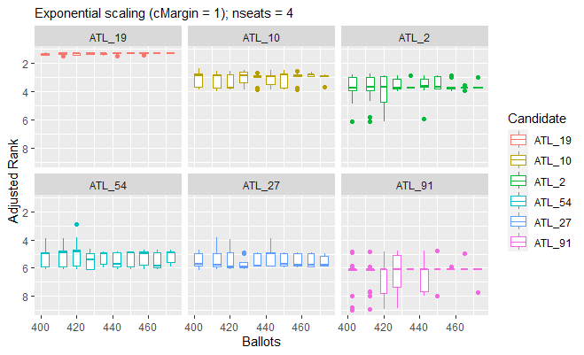
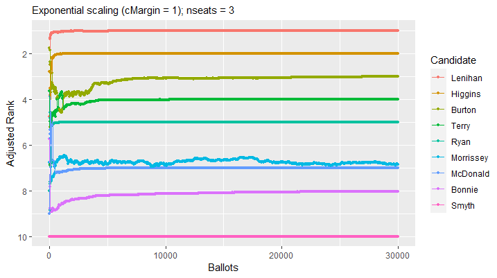

The goals of SafeVote are to investigate the safety of announcing preliminary results from an election, and to allow experimental study of the safety of a complete ranking of all candidates (as in a party list) that is derived from a small-scale election with preferential ballots.
Installation
You can install the development version of SafeVote from GitHub with:
# install.packages("devtools")
devtools::install_github("cthombor/SafeVote")Example
This mod of vote.2.3-2 reports the margins of victory in an election.
The value of the safety parameter will affect the completeness of the safeRank ordering of the candidates. Setting safety = 0 will cause safeRank to be a total ranking of the candidates, except in the rare case that there is an exact tie. The “fuzz” z on the vote-differentials in a safeRank clustering of the candidates is $z = s\sqrt{n}$, where s is the value of the safety parameter and n is the number of ballots.
library(SafeVote)
stv(food_election,quiet=TRUE)$rankingTable
#> Rank Margin Candidate Elected SafeRank
#> 1 1 8.0000000 Chocolate x 1
#> 2 2 0.5548889 Strawberries x 2
#> 3 3 1.2225556 Oranges 2
#> 4 4 0.7774444 Sweets 2
#> 5 5 NA Pears 2
stv(food_election,quiet=TRUE,safety=0)$rankingTable
#> Rank Margin Candidate Elected SafeRank
#> 1 1 8.0000000 Chocolate x 1
#> 2 2 0.5548889 Strawberries x 2
#> 3 3 1.2225556 Oranges 3
#> 4 4 0.7774444 Sweets 4
#> 5 5 NA Pears 5Three safety-testing routines are supplied, to support experimental study of the stochastic behaviour of ballot counting methods.
testFraction draws a series of independent samples from a ballot box. Stochastic experimentation with this method will, we hope, help future researchers develop advice, to election officials, on whether a preliminary count is sufficiently stable for them to make a preliminary announcement of the result – without undue risk of having to retract their announcement (as in Hastings NZ in October 2022). As seen below, in the case of the yale_ballots dataset, 400 of the 479 votes were sufficient to establish candidates ATL_19, ATL_10, and ATL_2 as being very likely to be three of the four winners. The balloting was extremely close for the fourth seat. ATL_54 was the eventual winner; but ATL_54 and ATL_27 are ranked approximately 5= as the last 50 ballots are counted. The STV variant used in this experiment has fractional vote-transfers and a Hare quota.
load(SaveVote)
xrHare <-
testFraction(yale_ballots,arep=9,ainc=5,astart=400,
countArgs=list(nseats=4,safety=0.0,quota.hare=TRUE))
plot(xrHare,boxPlot=TRUE,boxPlotCutInterval=10,
line=FALSE,facetWrap=TRUE,nResults=6)
testFraction may also be useful in determining the extent to which the safety of the preliminary results of an STV election is affected by its quota method. In the case of the 2016 Yale Senate election, the use of a Droop quota, rather than a Hare quota, has a significant influence over the partial results for the fourth seat. This influence is readily explained by the fact that multiple rounds of elimination were required before any candidate achieved the quota. Fewer rounds of elimination are required to reach a Droop quota, so fewer votes are transferred before each seat is filled – which will differentially affect the vote-counts of the candidates still in play for the remaining seats. Furthermore, the Cambridge method of transferring votes may have been employed. Under these rules, the initial numbering of the ballots determines the ballot papers which are consulted when a candidate’s surplus votes are transfered. As noted in the tests of STV v1.0.2, if ballots are selected for a vote-transfer process by a pseudorandom number generator, the seeding of this generator affects the outcome of the election. The per-candidate boxplots in the last decile of vote-counting in our experimental results below (using the Droop quota with fractional vote transfers) illustrate this phenomenon. The median result of the last decile of ballot-counting show ATL_2 having a very small margin of victory for the third seat, and ATL_54 having a slight advantage over ATL_27 in a very close race for the fourth seat.
load(SaveVote)
xrDroop <-
testFraction(yale_ballots,arep=9,ainc=5,astart=400,
countArgs=list(nseats=4,safety=0.0,quota.hare=FALSE))
plot(xrDroop,boxPlot=TRUE,boxPlotCutInterval=10,
line=FALSE,facetWrap=TRUE,nResults=6)
testAdditions can be used to assess the sensitivity of an STV election to a tactical-voting strategy of “plumping” for a favoured candidate. For example, we find it takes only two “plumping” ballots to shift “Strawberries” from third place to second place in the food_election dataset. Note that in this test we have set the safety parameter of the stv ballot-counting method to zero, so that the output of testAdditions reveals a complete ranking of the candidates unless there is an exact tie.
load(SaveVote)
testAdditions(food_election, arep = 2, favoured = "Strawberries",
countArgs = list(safety = 0))
#>
#> Adding up to 2 stv ballots = ( 3 5 4 1 2 )
#> Testing progress: 1, 2
#>
#> Results of testAdditions at 2022-12-26 08:25:22
#>
#> Dataset = food_election, countMethod = stv, rankMethod = safeRank
#>
#> | | safety|
#> |:---------|------:|
#> |countArgs | 0|
#>
#>
#> | | ainc| arep| tacticalBallot|
#> |:------------|----:|----:|----------------------------------------------------------------------:|
#> |otherFactors | 1| 2| c(Oranges = 3, Pears = 5, Chocolate = 4, Strawberries = 1, Sweets = 2)|
#>
#> Experiment ID, number of ballots in simulated election, ranks, winning margins:
#>
#> |exptID | nBallots| Oranges| Pears| Chocolate| Strawberries| Sweets| m.Oranges| m.Pears| m.Chocolate| m.Strawberries| m.Sweets|
#> |:------|--------:|-------:|-----:|---------:|------------:|------:|---------:|-------:|-----------:|--------------:|---------:|
#> |SBK0 | 20| 2| 5| 1| 3| 4| 1.4451111| 2| 8| 1.7774444| 0.7774444|
#> |SBK1 | 21| 2| 5| 1| 3| 4| 0.6673333| 2| 8| 2.6663333| 0.6663333|
#> |SBK2 | 22| 3| 5| 1| 2| 4| 3.4447778| 2| 8| 0.1104444| 0.5552222|testDeletions deletes ballots sequentially from the ballot box, counting after each deletion. When its results are plotted in inverse order of collection (i.e. in increasing order of the number of ballots n) we see one possible evolution of the preliminary results of an election in which ballots are counted in a randomised order (without replacement) from the ballot box. Note that a plot of the results of testFraction has a similar appearance, however the ballot boxes counted in testFraction are independently sampled (“bootstrapped”) from the full dataset of ballots.
load(SaveVote)
xr <-
testDeletions(dublin_west,dinc=25,dstart=29988,quiet=FALSE,
countArgs=list(safety=0.0,nseats=3))
save(xr,file="../s0di25ns3.rdata")
plot(xr,title="testDeletions, file = s0di25ns3")
In the plots above, the “adjusted rank” of a candidate is their ranking r plus their scaled margin of victory. Following the usual convention, the most-popular candidate is at rank 1. Accordingly, we invert the y-axis so that the rank-1 candidate is visually dominant. Our default scaling of a margin of victory m is $e^{-cm/\sqrt{n}}$. This exponential scaling makes it possible to see small differences in vote-counts in the small margins of victory which affect the safety of an election result. We introduce the scaling factor $c/\sqrt{n}$ into the exponent as a rough-cut estimate of the standard deviation of the standard deviation of a victory margin in an election with n ballots. Our margin-scaling parameter c has the default value of 1, and may be adjusted using the parameter cMargin of plot.SafeVote. In the sample testDeletions plot above, Morrissey’s adjusted rank is visually very close to McDonald’s adjusted rank when most of the ballots have been counted. This suggests to us that their relative standing in this election is sensitive to small variations in voter behaviour.
One of our primary motivations for developing this package was its possible future use in ranking candidates for the party list of the Green Party of Aotearoa New Zealand. To date, we have found no academic study of methods for ranking candidates using preferential-voting ballots, making it quite possibly a greenfield problem in social-choice research. In private communication of November 2022, Prof. Nicolaus Tideman had offered some advice on our initial proposal for ranking with a Condorcet score. However, because diversity is one of the explicit values of this party, a ranking that is derived from an STV-style ballot-counting process would seem much more appropriate for use by the NZ Greens than any ranking that is derived from a Condorcet scoring process. Indeed, the NZ Greens are currently using a modification of Meek’s STV algorithm, enshrined in Schedule 1A of Local Electoral Regulations 2001, to form its party list. Under its current rules, the NZ Greens rely on a delegated assembly to form an initial list. In a possible future in which the NZ Greens have dozens of elected MPs, the size of this assembly may have to be increased if the sitting MPs seeking re-election are to be safely ranked against each other, and against other candidates in the pool. We wonder: are n preferential ballots sufficient to safely rank-order $\sqrt{n}$ candidates? This package is, we hope, a first step toward answering this question.